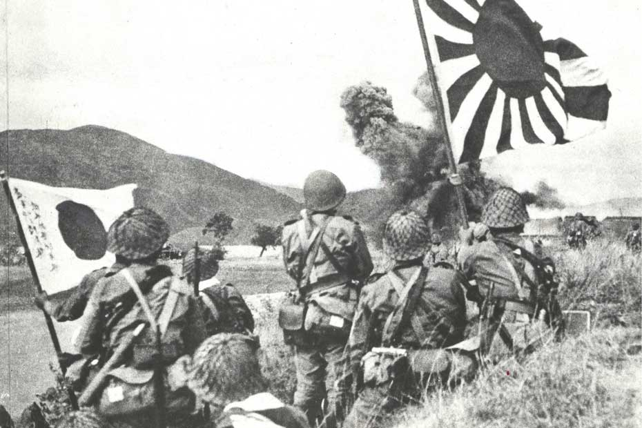

Dans son rush à l’occidentalisation, le nouveau cabinet de Meiji se persuade que pour être pris au sérieux par les grandes puissances étrangères ils doivent eux aussi se lancer dans des conquêtes coloniales. La première sera Taiwan, l’île étant prise à la Chine de Qing en 1895. En 1910, le Japon finit par annexer la Corée qui depuis 1876 a signé avec l’Empire un « traité inégal » du même type que celui qu’imposait les USA au Japon. A cette époque, la Corée appartient à la Chine de Qing et ce premier conflit est connu comme la première guerre Sino-Japonaise. Le Japon poursuit son expansion jusqu’à la Mandchourie entrant en guerre avec la Russie.Cette guerre que la Japon gagne en un an (1904-1905) est une surprise pour les puissances occidentales et représentera un tournant décisif pour le Japon sur la scène militaire internationale. Suite à la restauration Meiji, le Japon entretient avec l’Angleterre de bons rapports (soutien à l’alliance Satcho) ainsi qu’une peur commune de la Russie.
Cette alliance permettra au Japon, lorsque l’Angleterre entre en guerre avec l’Allemagne, d’en profiter pour se saisir des îles germaniques du Pacifique Sud, dont elle en gardera les droits grâce au traité de Versailles. Le Japon cependant continue de rêver à un Empire, et souhaite pour se faire gagner le contrôle du Pacifique. En Mandchourie il crée un sabotage qui sera connu sous le nom d’incident de Mudken en 1931 et suivie par un autre au pont de Marco Polo en 1937, pour déclarer la guerre à une Chine souffrant déjà de guerre civile. Commence alors la seconde guerre Sino-Japonaise. Cette terrible guerre est tristement connue pour être l’un des théâtres les plus atroces de crimes de guerre : le massacre de Nanjing. Ce massacre reste de nos jours une des causes principales de désaccords entre la Chine et le Japon.